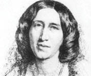

(1819 – 1880)

George Eliot size erkek adı gibi geldiyse haklısınız. Çünkü bu ad, hayatının bir dönemini takma adla sürdüren ve kitaplar yazan Mary Anne Evans'ın yazarken kullandığı addı. Yazar, Victoria dönemi İngiltere'sinin en ünlü yazarlarından biri olmanın yanı sıra birçok ünlü yazarla da gönül ilişkileri yaşamıştır...
Birçok romanında George Eliot (okunuşu: Corc Eliyıt) adını kullanan Mary Anne Evans 22 Kasım 1819'da, Britanya'da, Warwickshire kentinde doğdu. Robert Evans ve Christiana Pearson Evans'ın en küçük kızıydı. İkisi annesinin bir önceki evliliğinden olmak üzere, dört kardeşi vardı. 1824 yılında ilkokula, sonra da Nuneaton'daki Bayan Wallington'ın okuluna başladı. Okuldaki öğretmeni Maria Lewis genç Mary'ye çok şey öğretti ve ikilinin dostluğu uzun yıllar devam etti. Öğretmeni, George Eliot'ın kitaplarındaki bazı karakterlere de esin kaynağı oldu. Annesinin 1836'da kanserden ölmesinden sonra, büyük bir malikanenin kahyası olan babasına bakmak zorunda kaldığı için okuldan ayrıldı. Babası zengin bir adam olmamasına rağmen kızına özel hocalar tutup bol bol kitap alarak onun kişisel gelişimine büyük destek oldu.
Evans'ın ilk şiiri Christian Observer adlı bir dergide 1840 yılında çıktı. O günlerde Eliot dış görünüşüyle çok ilgileniyor, bir yandan da Hıristiyan dininin dogmaları ve Victoria dönemi İngiltere'sinin değer yargılarıyla sık sık çatışmaya düşüyordu. O sırada artık kiliseye gitmemeye karar verdi ve Coventry bölgesinde bulunan yazarlarla ve sanatçılarla tanışıklık kurmaya başladı. Din, ahlak ve siyaset konusunda katı bir tutumu olmayan, özgür düşünceli bu çevreye katılması, yeni düşünceler edinmesine yol açtı. Babasının 1849'da ölümü üzerine önce İtalya ve İsviçre'ye gitti, daha sonra Londra'ya yerleşerek Marian Evans adıyla Westminster Review dergisinde çalışmaya başladı. Aydın bir kadın olan Evans Charles Dickens, Wilkie Collins gibi o dönemin önde gelen düşünür ve yazarlarıyla dost oldu. Bunlar arasında çok yönlü bir insan olan gazeteci George Henry Lewes'le (1817 – 1878) olan dostluğu yaşamına ayrı bir anlam kattı. Lewes onu roman yazmaya teşvik etti. İkili, 1857'den itibaren birlikte olmaya başladı ve ilişkileri Lewes ölünceye kadar uyum ve mutluluk içinde sürdü.
Edebiyat yaşamına eleştirmen ve çevirmen olarak başlayan Evans'ın yayımlanan ilk öykü kitabı Din Adamının Yaşamından Sahneler'dir (1852) Yazar bu yazılarıyla birlikte George Eliot takma adını kullanmaya başladı. Bunun çeşitli nedenleri vardı: Lewes'la yaşadığı evlilik dışı ilişki, o dönemin yapısı gereği tepki çekiyordu ve birçok konuda sert eleştiriler yazan "Mary Evans"ın kendisi olduğunun bilinmesini istemiyordu. Dahası, kadınlar o günlerde yazı yazsalar bile yemek, ev hayatı ve din konuları dışında yazılar yazmaları hoş karşılanmıyordu. Böylece Mary Evans, sevdiği adamın adı olan George'u kullanarak yazarlık kariyerinde farklı bir dönemi başlattı. 1859'da yayımlanan ilk romanı Adam Bede'de gözlenen, günlük yaşamı gerçekçi ayrıntılarla yansıtma yeteneği bundan sonraki yapıtlarının da başlıca özelliği oldu. Roman büyük ilgi çekti ve hiç tanınmayan bu "George Eliot"ın kim olduğu günlerce kamuoyunu meşgul etti. Sonunda yazarın aslında kadın olduğu anlaşılınca ortalık karışsa da başta kadın hakları savunucuları olmak üzere, halkın büyük kısmı yazara destek çıktı. Aynı yıl yazdığı Kalkan Peçe adlı kitapsa onun birden ünlenen bir kadın yazar olarak yaşadığı zorlukları anlatıyordu. 1860'ta Kıyıdaki Değirmen, bundan bir yıl sonra da tarihsel bir roman olan Romole yayımlandı. Bunları Silas Marner (1861), Radikal Felix Holt ve yazarın başyapıtı olan Middlemarch (1871-72) izledi. Bu roman birkaç konunun iç içe geçtiği, toprak sahiplerinden köylülere, meyhanecilerden işçilere kadar çeşitli kahramanların büyük bir gerçeklikle betimlendiği ve çağdaş düşüncelerin yer aldığı güçlü bir yapıttı. George Eliot, yazmaktaki amacının "tozlu sokaklardan ve tarlalardan gelen, etten kemikten insanların yaşamlarını yansıtmak" olduğunu söylemiştir. Yazar 1876'da Daniel Deronda'yı yazana kadar çeşitli şiirler de yayımladı. Lewes 1878'de öldükten sonra, Mayıs 1880'de John Walter Cross'la evlendi. Evliliği kısa süren George Eliot, 22 Aralık 1880'de öldü ve Londra'daki Highgate Mezarlığı'na gömüldü. Gerçekçi bir yazar olan George Eliot çağdaş romanın en belirleyici özeliklerinden olan psikolojik çözümlemenin öncüsüdür.
Seçme Romanları: Adam Bede, (1859 – Kastaş Yayınları 2003), Lifter Veil (1859 – Altın Bilek Yayınları, 2007), Kıyıdaki Değirmen (1860), Silas Marner (1861 – Altın Bilek Yayınları, 2007); Romola (1863), Radikal Felix Holt (1866), Middlemarch (1871/1872), Daniel Deronda (1876)